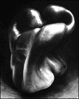

|
Harrison Photography Gallery | |
|
(c) |
Edward Weston |
|
The Institute houses more than 8,000 images from the
birth of photography in the 1850s to the present day,
including such artists as Ansel Adams, Walker Evans, Edward
Weston, Lee Friedlander, Lewis Hine and many others. This
collection includes an
interactive program. | |